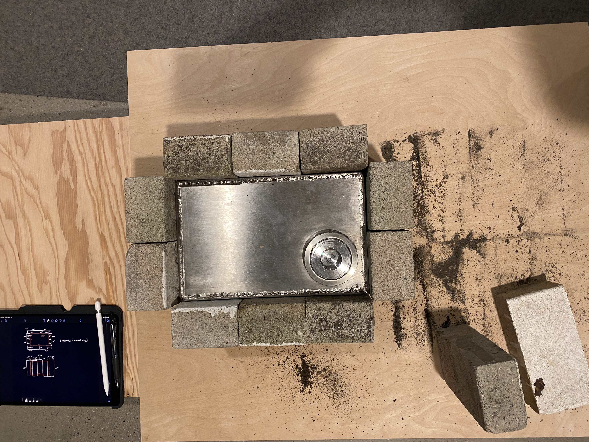

<topbar style="display:none;">
<item><a href="../index.html">Home</a></item>
<item><a href="../about.html">About</a></item>
</topbar>
<style>
a:link {
color: blue;
background-color: transparent;
text-decoration: underline;
}
a:visited {
color: pink;
background-color: transparent;
text-decoration: underline;
}
</style>
## Week 4
<br>
#### Project Re-evaluation
Focus on building something that is essentially the core idea: get energy into the salt, and extract heat from it to cook something.
#### Energy Storage and Heat Transfer Ideas Moving Forward
* Building a frame for a box out of wood
* Think about insulation for the box
* Refractory materials, like insulating ovens and furnaces
* Castable refractory
* Will crack if box expands?
* Firebricks
#### Firebrick Insulation
How thinking about insulation for the salt battery. Decided to scavenge for firebricks and came across stacks that looked like this:
Then measured the bricks and attempted to make a CAD model of what a potential configuration could look like:
<img src="Screen Shot 2021-11-14 at 7.24.14 PM.png" alt="me" width="300"/>
Bricks were then collected and were attempted to be put into that configuration:

And many more configurations were tried to get a good contact with the box on all four sides and also provide a working configuration for the bottom of the box.
The bottom of the box is where the light will strike the box to heat it up, and so we wanted to create a big enough gap in the brick to allow a 4-5in diameter collection
area while also configuring the bricks along the sides so that it makes sense when put into a frame. Here are some configurations and experimentations:
And some configurations seemed like they would work really well but there were gaps between the bricks and one side of the battery. We are currently trying
to figure out ways to decrease the gap, either by cutting the brick or filling the gaps with sand or something similar. Should another configuration be favorable
to our application and to our frame, then such measures might not be necessary. We are also investigation whether the effect of these gaps are negligible.
A frame to contain the box and insulation was also measured out and plywood was marked to be cut.